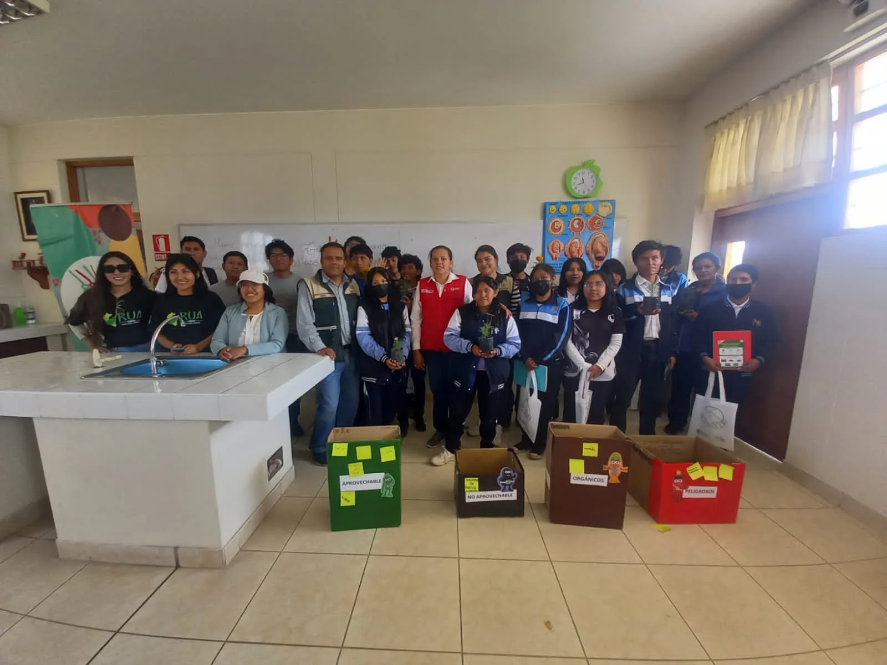
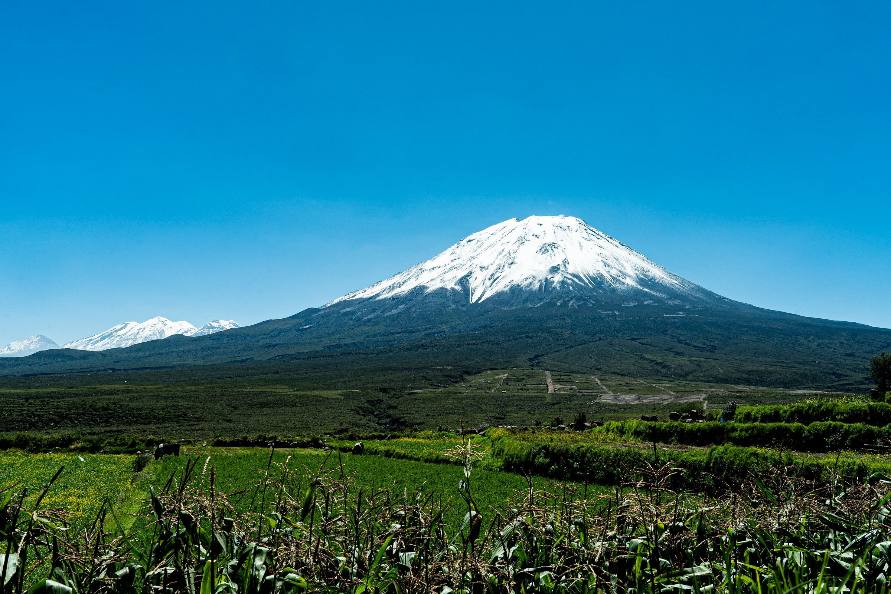
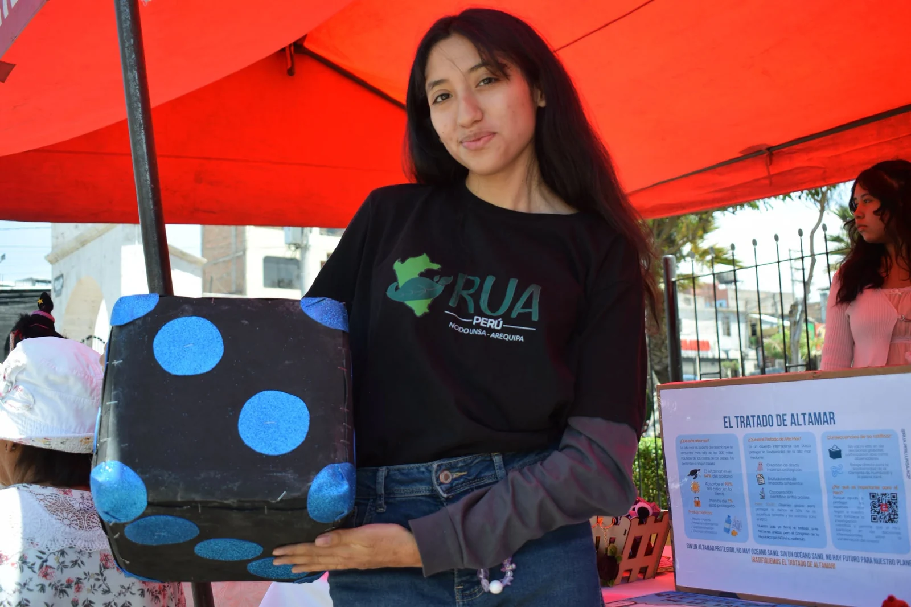
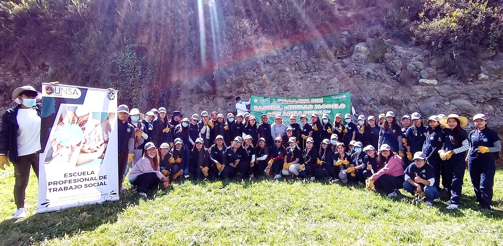

Red Universitaria Ambiental · Nodo UNSAPor una Arequipa
Por una Arequipa
más viva.
Somos jóvenes que conectan conocimiento, comunidad y acción para cuidar el lugar que compartimos.
Somos comunidad universitaria en acción por el ambiente.
Desde 2014Construyendo ciudadanía ambiental
Comunidad universitariaDistintas disciplinas, un propósito
Con raíces en ArequipaY compromiso con nuestro entorno
Somos RUAEl futuro se cuida.
El futuro se cuida.
Y se construye
en comunidad.
Voluntariado ambiental sin fines de lucro
Somos estudiantes de la Universidad Nacional de San Agustín y miembros honorarios profesionales unidos por una convicción: la comunidad universitaria puede contribuir a una Arequipa más sostenible.
Desde 2014 impulsamos la ciudadanía, la educación y la cultura ambiental, conectando la formación de líderes con la acción en nuestro entorno.
Ver másNuestra acciónEl compromiso
El compromiso
se vive afuera.
Aprender, liderar y actuar. Así conectamos la universidad con nuestra comunidad.
Historias de acciónUn compromiso que
Ver másUn compromiso que
toma forma.

III Ecoferia: una mirada al cuidado del mar
RUA participó en la III Ecoferia de Radio Yaraví y Amakella con una actividad de sensibilización sobre el Tratado de Alta Mar y la protección de los ecosistemas marinos.
Ver más
Reforestación en la Asociación 28 de Julio
RUA participó en una jornada de Hilando Verde en Cerro Colorado, junto a Michell, instituciones públicas y otras organizaciones.
Ver más
Una jornada por el río Chili
RUA se sumó a estudiantes de Trabajo Social de la UNSA, voluntarios y entidades locales para retirar residuos de las riberas del río Chili en Tiabaya.
Ver másDesliza para conocer más historias.

La fuerza de nuestra redDistintas miradas.
Distintas miradas.
Un mismo planeta.
La sostenibilidad necesita ciencia, creatividad y ganas de aportar. En nuestra comunidad, cada perspectiva suma.
Ver más
Tu aporte cuentaHay muchas formas
Hay muchas formas
de hacer la diferencia.
Tiempo, ideas, conocimientos. Cada forma de involucrarse puede abrir nuevas posibilidades.
Súmate al voluntariado
Conecta con personas que comparten tu compromiso y consulta cómo ser parte del nodo.
Quiero participarConstruyamos una alianza
¿Representas a una organización o tienes una idea? Exploremos cómo trabajar juntos.
Proponer una colaboraciónDonaciones que suman
Conversa con el equipo sobre las necesidades y los canales de apoyo disponibles.
Ver másAntes de dar el pasoQuizá te estés
Quizá te estés
preguntando…
Conocer un poco más es una buena forma de empezar.
¿Quiénes forman parte de RUA?
El nodo UNSA reúne a estudiantes de la Universidad Nacional de San Agustín de Arequipa y miembros honorarios profesionales, con una mirada multidisciplinaria y un compromiso común con el ambiente.
¿Cómo puedo ser parte del voluntariado?
Contacta a nuestros representantes para consultar la próxima convocatoria, los requisitos y las formas de participación. Las fechas se comunican a través de los canales oficiales de RUA.
¿Debo estudiar una carrera ambiental?
RUA es una comunidad multidisciplinaria: distintas áreas del conocimiento pueden aportar al cuidado ambiental. Consulta al equipo las condiciones de la siguiente convocatoria.
¿Cómo puedo colaborar con una iniciativa?
Puedes compartir una propuesta de trabajo conjunto o consultar qué apoyos necesita el equipo. Escríbenos por el canal oficial de colaboraciones para coordinarlo.
¿Dónde encuentro las próximas actividades?
En nuestras redes sociales y canales oficiales. Allí podrás consultar las fechas y condiciones de cada actividad antes de inscribirte.